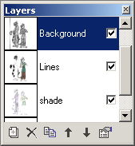

Layers Window
This window allows you to manage the multiple layers that an image may contain in Paint.NET. There is always one active layer, and all drawing affects only that layer. Each layer may be given a name, and may have a blending mode and opacity set. You may also make a layer visible or invisible by setting the checkbox appropriately.
You may think of the layers of an image as representing a stack of transparency sheets placed one on top of the other. Images that are on lower layers will show through to the top, but only if the layers on top do not occlude them. Note that in Paint.NET the layering order is the reverse of that which is seen in most other popular graphics software, and so the "bottom" of the layer stack is actually presented at the top of the window.
-

There are also six buttons on the bottom of the layer window. From left-to-right they are:
Add New Layer
This will add a new, completely transparent layer to the image. It will have a generic name that indicates what layer position it has been placed at, such as "Layer 4."
Delete Layer
This will delete the active layer from the image. You may not delete a layer if it is the only one in the image.
Duplicate Layer
This will take the active layer, duplicate its contents and attributes, and place it in the image after the original layer.
Move Layer Up
This will move the current layer to a higher position in the layer order.
Move Layer Down
This will move the current layer to a lower position in the layer order.
Layer Properties
This will bring up the properties for the active layer. From here you may give the layer a different name, toggle its visibility, and set its blending properties.

Copyright © 2005 Rick Brewster, Chris Crosetto, Tom
Jackson, Michael Kelsey, Brandon Ortiz, Craig Taylor, Chris Trevino, and Luke Walker. Portions Copyright
© 2005 Microsoft Corporation. All Rights Reserved.